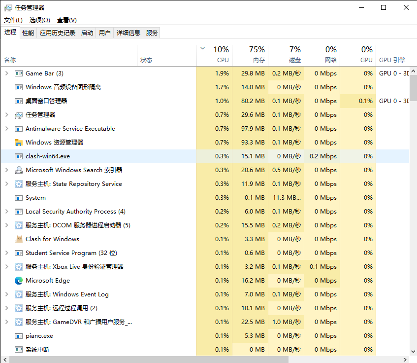
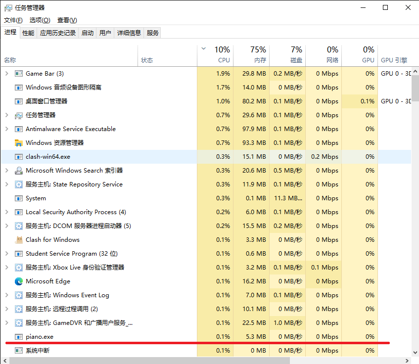

接着奏乐
“工作单调且乏味……”
“你说得对，但是接着奏乐！”
一个键盘钢琴
下载
请到我的 GitHub项目 上下载。
启动
双击 piano_open.bat 打开，采用后台运行和重复运行检测技术。
关闭
双击 piano_kill.bat 关闭，避免在任务管理器中翻找。
使用
默认键位
| 音高 | 1 | 2 | 3 | 4 | 5 | 6 | 7 |
|---|---|---|---|---|---|---|---|
| 低低 | no | no | no | no | / | . | , |
| 低 | z | x | c | v | b | n | m |
| 中 | a | s | d | f | g | h | j |
| 高 | 6 | 7 | 8 | 9 | 0 | - | = |
| 高高 | u | i | o | p | [ | ] | \ |
演奏
钢琴
- 在程序启动后，短按键盘一次发音一次，长按键盘每秒发音一次。
- 默认情况下，按默认键位以外的字母和数字键，随机发音。
- 支持和弦。即，可以同时按下多个键。
小提琴
- 在程序启动后，按键盘发音。长按键盘持续发音。
- 默认情况下，按默认键位以外的字母和数字键，随机发音。
- 不支持和弦。即，在未松开一个键时按下另一个键，立刻结束原先发音，开始新的发音。
核心程序的技术
1. midi音乐
2. 键盘监控
3. Sleep减速
特点
1. 流畅优美
使用midi音乐，极致自然。
2. 同步高效
通过键盘监控而不是控制台输入，在工作时享受奏乐。
3. 无痕便捷
后台运行、键盘监控、Sleep减速三大技术加持，做到表面没有，任务管理器中不比你其他东西显眼。
点击放大，找一找

看看

4. 程序开源
c++ 编程，易读易改，码风优良。
更多
1. 兼容性
目前仅在 windows10 64位 上使用过。其他不清楚。如果你的系统也可以，我觉得这件事情泰酷辣。
2. 更加无痕
- 将程序名改为
Windows服务.exe之类，注意不要真的和某些进程重名，然后同步修改两个bat文件。（还可以改图标等等）。 - 为两个
bat程序设置快捷键。
3. 自定义
- 如果无法编译，是没有导入 midi库文件。这里推荐一个稳定的方式：在编译命令中加入
-L. -lwinmm。 - 更改键位应在
void begin();函数里。 - 更改音调时，建议查看专门的midi介绍。
- 不建议去尝试钢琴以外的乐器，因为那些一般需要额外的结束符。我补上了一个小提琴的简单实现作为参考。
注：某些乐器一个发音会自动停止（如钢琴），某些不会（如小提琴）。
在单个进程中，小提琴暂不支持和弦，但可以尝试键位左右分区_、_多声道等实现和弦。暂不实现。
本博客所有文章除特别声明外，均采用 CC BY-NC-SA 4.0 许可协议。转载请注明来自 Something for Noting！